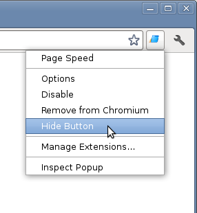

Thanks for installing PageSpeed Insights for Chrome!
PageSpeed Insights is now available in the Chrome Developer Tools. To use PageSpeed Insights:
You may also wish to watch this short video on using Page Speed Insights for Chrome.
Once you've found PageSpeed Insights in the Chrome Developer Tools, you may wish to remove the PageSpeed Insights icon from the main Google Chrome toolbar. To hide the PageSpeed Insights icon, right click on it and select "Hide Button". 